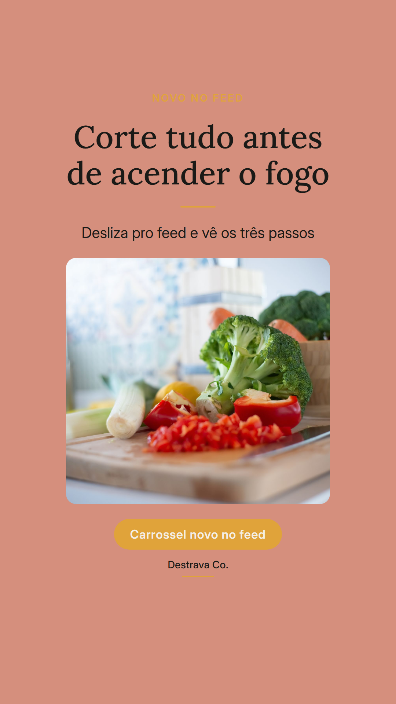
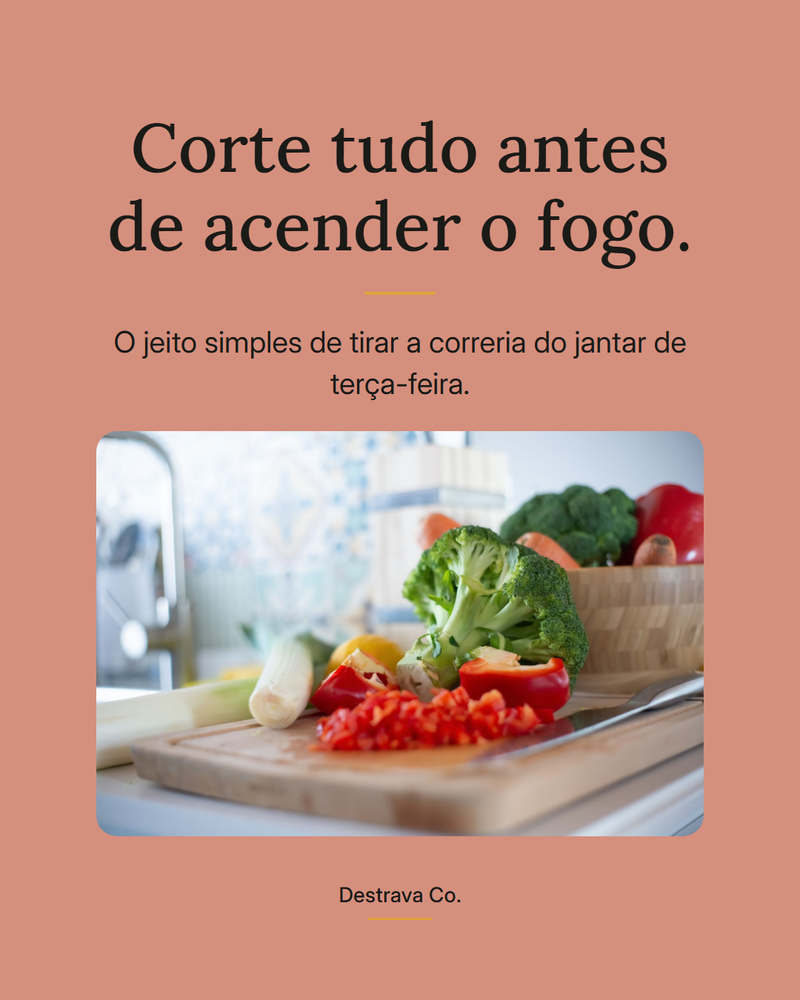
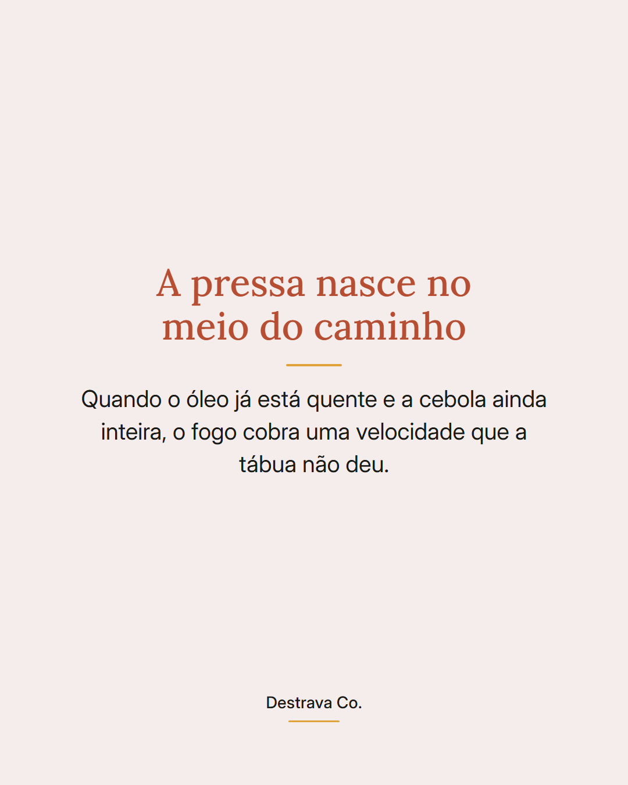
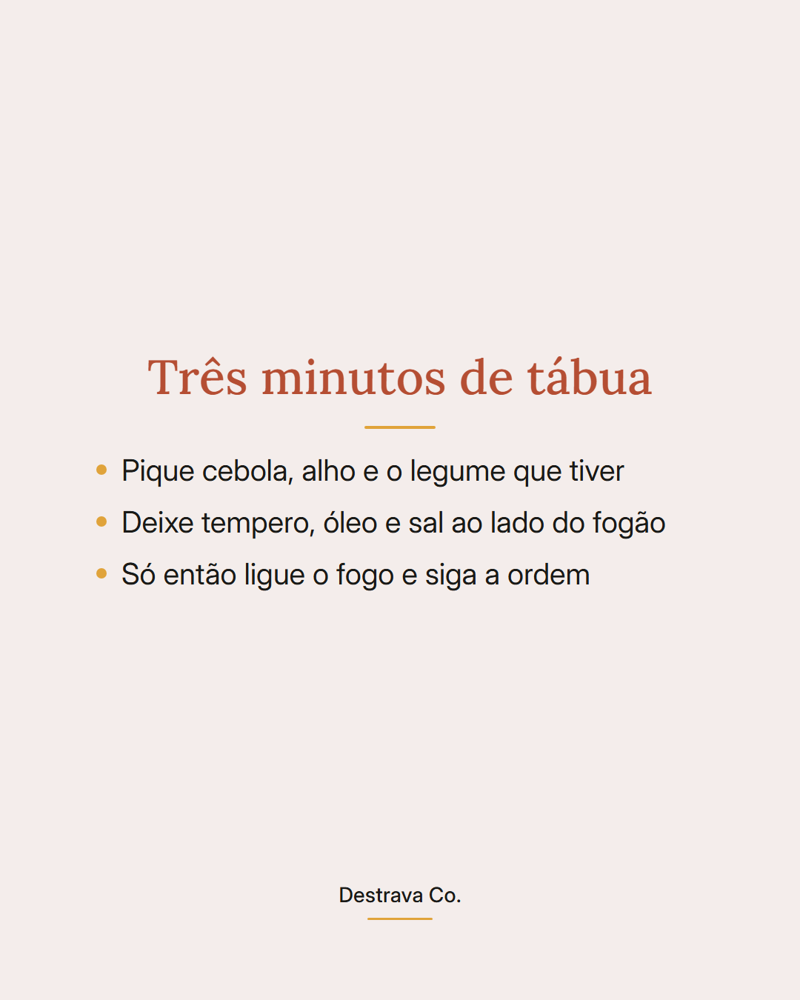
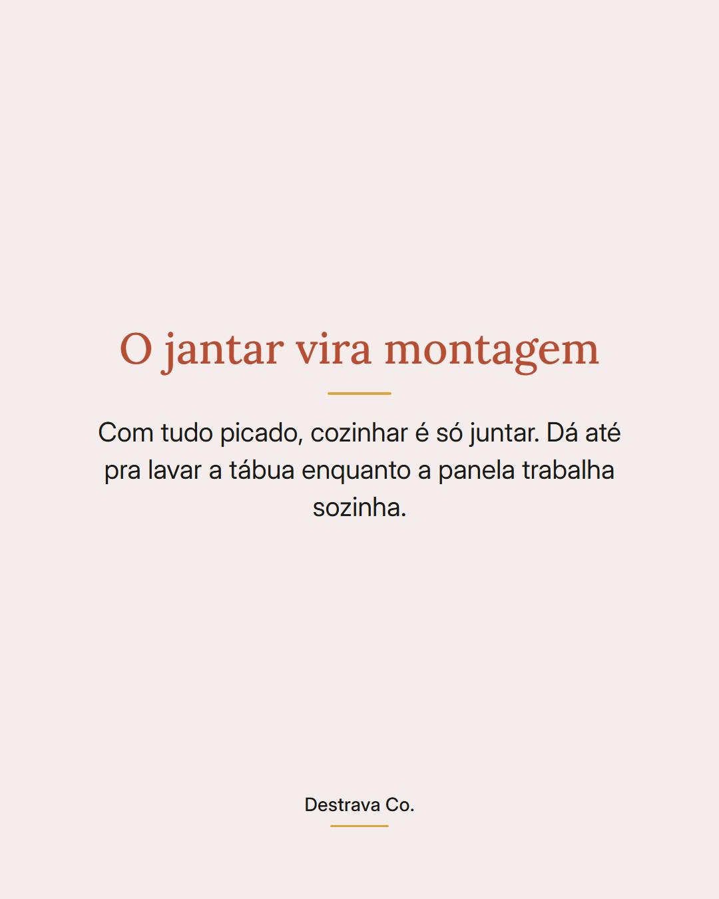

Cozinhar fica rápido quando a tábua vem antes do fogo.
Jantar prático quase nunca é questão de receita nova. É ordem: picar cebola, alho e o legume que tiver, separar tempero, óleo e sal, e só depois acender a boca do fogão.
São uns três minutos de tábua que economizam aquela correria de mexer a panela com uma mão e cortar com a outra. Sem cheiro de queimado, sem começar o jantar de mau humor.
Depois disso, cozinhar é só montar. E ainda sobra tempo pra deixar a pia mais limpa antes de sentar pra comer.
Salva pra lembrar na próxima terça e manda pra quem sempre cozinha com pressa. Se quiser ideias já pensadas pra até 15 minutos, o PDF com 20 receitas rápidas está esperando você.